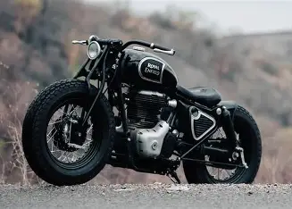
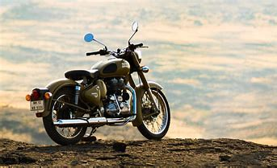

logindh@gmail.com
Royal Enfield announced its first takeover of another company in May 2015 with the purchase of a UK motorcycle design and manufacturing firm, Harris Performance Products,[16][17] that had previously developed the chassis of the Royal Enfield Continental GT Cafe Racer.[18]